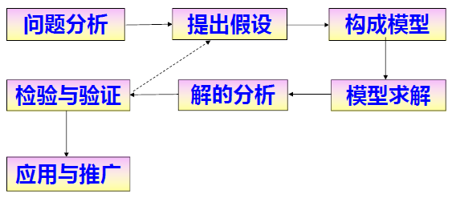

数据建模
1. 数据模型
1.1. 数据
数据：现实世界的记录，是原始素材。
1.2. 数据的表达
数据通常被认为是一系列外部环境的事实的表达。
数据是计算机能够处理的对象。
数据泛指对客观对象的数量、属性、位置及其相互关系的抽象表示，以适合于用人工（如计算机）的方式进行保存、传递和处理。
数据要通过人们约定俗成的字符和定义表现出来。
数据具有一个使用范围，不同领域的人在描述同一事物是会出现不同的数据。
1.3. 数据模型
数据模型：一组由符号、文本组成的集合，用以准确表达信息景观，达到有效交流沟通的目的。
数据模型的构成：数据类型、相互作用、连接媒介
模型的分类：
- 概念模型：建立模型是为了以文档形式记录较抽象的想法。（业务需求）
- 逻辑模型：模型的建立纯粹是为了以文档形式记录元素的规律和结构。（业务解决方案）
- 物理模型：数据模型为设计数据库，是编写代码建立表、视图、完整性约束的基础。（详细的技术解决方案）
模型数据的生命周期：数据元素确定、计划阶段、数据收集、数据储存、数据综合、决策应用、数据归档、数据丢弃（删除）
1.4. 基本概念
1.4.1. 实体
实体表示对于业务非常重要或值得获取的事物及与之相关的信息集合。
实体表达了一个集合，而实例就是集合中的一个元素。实例是一个具体实体的呈现或者说是具体的值。
通常采用“6W”方法（Who、What、When、Where、Why、Way）归纳所有的实体。
实体的三个层面：
- 概念：通常是建模对象中所定义的术语。是对基本的、关键的业务概念描述（通常受制于建模对象的范围）。
- 逻辑：比概念展示更多的细节，即详细的解决方案。一个概念实体可以表示成多个逻辑数据模型实体。例如：属性。
- 物理：展现实体包含的技术细节，即详细的技术解决方案。例如：在关系型数据库（RDBMS）中的数据库表或视图。
强实体是指独立存在的人、事物或地点。 弱实体是指依赖于其他实体而存在，它的实例依赖于引用其他实例。
1.4.2. 属性
属性是实体实例所具有的一组各自独立的描述信息。
属性根据细节展示程度分为三个层面：
- 概念层要求是对建模对象的业务有基本且关键的特性的概念性的描述。
- 逻辑层用来描述业务特征，与业务解决方案密切相关，与软、硬件技术无关。
- 物理层可以形象地概括为一个“物理容器”来储存数据。
1.4.2.1. 属性的域
域是一个属性所有取值构成的集合。域有验证标准，满足多个属性的使用。
域的类型：
- 格式域：将数据指定为数据库系统中的标准类型。
- 列表域：优先元素构成的集合，格式域的精简。
- 范围域：设置最大和最小值。
域的好处：
- 插入数据前，通过域检查来提高数据质量。
- 交流性更强。
- 提高维护和新建模型的效率。
1.4.3. 关系
关系是数据模型中的规则（特定情形下的行为的规定和指示），用来说明实体间的规则或导航路径，通常用连接线段表示。
关系的类型：
- 数据规则：指示数据间的关联内容。
- 结构完整型（SI）：参与某个关系的实体实例的数量。
- 参照完整型（RI）：定义了参与某个关系的实体实例取值的有效性。
- 行为规则：指示属性包含某个特定值时，需要采取什么操作。
关系的三个层面：
- 概念关系：高级别的规则或被关联的一些关键概念间的导航路径。
- 逻辑关系：定义细节的业务规则或逻辑实体间的导航关系。
- 物理关系：具体的、依赖于实现技术的规则或被关联的物理结构间的导航关系。
1.4.3.1. 关系的基数
基数表示一个实体中多少实例与另一个实体的实例发生关联。通常在关系域两端用符号来表示，指定了一种可以被实施的数据规则。
1.4.3.2. 关系的递归
递归关系指同一实体内实例间的规则。
递归关系包含：
- 一对多的层次结构：一个实体实例最多只能有一个父关系。
- 多对多的网状结构：一个实体实例可以有多个父关系。
递归关系的特点：
- 优点：递归关系将复杂业务简单化（模糊）描述，增加建模的灵活性。
- 缺点：递归关系会过于简单化，掩盖其背后的业务规则。
- 建模者需要权衡规则模糊与灵活性，分析案例不能简单照搬。
1.4.3.3. 关系的子类型
子类型可以将类似的属性或相似且关联的实体关系进行分组。通常用于相似实例、相似概念展示。
1.4.4. 键
键由一个或多个属性构成。
键的目的：实施规则、有效数据检索、实体间导航。
键的分类：
- 候选键：一个或多个可以唯一标识实体实例的属性。具有4个基本特征：
- 唯一性：不能标识多于一个实体实例。
- 强制性：不能为空，每个实体实例要求必须能被一个特定的候选键值所标识。
- 非易变性：取值不能被更改。
- 最小化：多个属性的最小组合。
- 主键：从候选键中选择，能以最好的方式标识实体实例。选择主键应考虑简洁性和隐私保护。
- 备选建：候选键中除了主键以外的键。
- 代理键：数据表的唯一标识符，不具备任何业务意义，通常由一个固定大小、无人工干预的计数器产生，而且与业务对比不可见。作用是提高了搜索、系统集成的效率。
- 辅助键：经常被访问或者需要被快速检索到的一个或多个属性。又称为非唯一索引或倒排入口（Inversion Entry, IE）。特征是不要求唯一或稳定，也可以不要求必须拥有值。
2. 数据建模
数据建模：构建数据模型的过程。
数据建模的目的：
- 为满足使用数据创建新定义的信息提供条件，尽可能以最基本、最不可分割、最基础的可复用组件的方法来收集和储存数据。
- 通常需要组合这些基本的数据元素，设计合适的储存和处理工具来成功地完成这项任务。
数据建模的基本要素：
- 发现这些数据元素。
- 确定目前它们之间的关联方式。
- 未来可以识别和使用这些数据。
数据建模的价值：核心价值：交流性（开发者）和精确性（应用者）
数据建模任务：
- 常规记录与分析：具有明确的规律和次序，需要反复执行。
- 维护不同种类数据文档，包括：企业级概念数据文档、项目逻辑数据文档、物理数据对象文档等。
- 提议ICT标准，包括提议标准化项目文档，参与代码、过程和文件的检查。
- 调查现有技术和工具，包括记录业务流程和范围、记录用户需求、将业务流程映射成数据对象等。
- 改进与创新：适应未来环境的变化和企业的愿景提出的设计、建议或改进。
- 设计新的数据结构，创建新的企业概念或逻辑数据视图、设计新的数据库结构等。
- 将组织或公司新计划整合到公司数据环境中并消除冗余，确定自建或购买等。
- 提供数据库设计的完整性、质量和风险的预估。
数据建模流程：问题描述、数据准备、数据探索、预测建模、结果可视化。
两种不同建模方式：
- 关系数据建模通过准确的业务规则描述业务如何运作的过程。
- 维度数据建模通过准确的导航来描述业务如何被监控的过程。
| 关系 | 维度 | ||
|---|---|---|---|
| 概念 | 数据规则。 | 导航。 | 所有概念、业务规则、应用范围。 |
| 逻辑 | 基于业务规则的详细业务解决方案。 | 基于导航的详细业务解决方案。 | 所有属性和业务规则。 |
| 物理 | 详细的技术解决方案。 | 详细的技术解决方案。 | 详细的技术解决方案。 |
2.1. 关系数据建模
2.1.1. 概念数据建模
概念数据模型由一组符号和文本构成，用来为特定的用户，针对特定的业务需求或应用程序范围，描述关键概念以及概念间的相互规则。即：描述了预设范围内的业务需求，展示了特定领域下的关键概念，以及概念间的相互作用。
- 关系概念模型：包括概念、概念定义以及表示业务规则的概念间的相互规则。
- 维度概念模型：包括概念、概念定义以及在不同层级分析量度时所用的导航路径。
概念数据模型的创建步骤（5步）：
- 提出5个策略性的问题。
- 应用程序（或系统）将要做什么（本质确定应用范围）？
- “现在”还是“将要”？
- 是否必须进行统计分析？
- 谁是用户（识别用户，用于确定概念模型的形式）？
- 灵活性还是简洁性？
- 概念的识别与定义。
- 对于关系概念模型，采用6W方法确立概念模板，以表格形式列出模型中的实体。
- 对于维度概念模型，首先要明确哪些特定的业务问题必须被回答。
- 创建关系。清晰、完整定义概念，并确定概念之间的关系。
- 对于关系概念模型，要明确实体间的相互关联。清晰掌握所有的规则。实体间每一条关系线，需要通过问题表确定参与性、可选性与子类型关系。
- 对于维度概念模型，要对上一步汇总的问题进行处理并创建一个粒度矩阵。粒度矩阵是一个二维表，列由根据业务问题而形成的量度构成，行由根据业务问题而形成的维度级别构成。
- 确定一个最有效的形式。通常采用三种形式来展示模型：
- 使用传统的数据模型符号。
- 使用业务草图。
- 使用轴技术符号。
- 检查数据模型，提出修改或重新定义一些概念。审阅上述结果并向逻辑数据建模阶段提交适当的内容。
2.1.2. 逻辑数据建模
逻辑数据模型是在应用概念数据模型定义的业务需求的基础上，形成的下一级的业务解决方案。该业务方案用逻辑数据模型来表达。即逻辑数据模型是为了解决特定业务需求而形成的业务解决方案。
前提：经过概念数据模型的构建，已经形成一个宽泛的要解决问题的业务范围和用户需求。
目的：实现用户需求的解决，即用逻辑数据模型来生成一套具体的解决方案。
- 关系逻辑模型：通过准确的业务规则表达来描述业务运转过程。包含实体及实体间的关系和属性。
- 维度逻辑模型：通过准确的导航表达来描述业务是如何被监控的过程。
2.1.2.1. 规范化
规范化：应用一组规则对事物进行整理的过程。
- 确保每个属性都是单值的，即一个属性只能包含一则信息。
- 提供一个完全的、唯一的依赖于主键事实。
规范化方法：
- 第一范式：一个关系模式R的所有属性的域都是原子的（每个属性必须是单值）。
- 第二范式：关系模式R中的所有非主属性都完全函数依赖于所有候选码。
- 第三范式：关系模式R中的非主属性既不部分依赖也不传递函数依赖于R上的所有候选码。
2.1.2.2. 抽象
抽象是一项可选技术。即通过重定义和将一些实体、属性、关系在模型范围内结合成更通用的条目，为数据模型注入灵活性。
抽象的不足：
- 降低了交流性。抽象后模型所表达的内容不再明确，即抽象后经常会将实体变成实体实例。
- 损失业务规则。抽象前可以使数据模型实施业务规则，而抽象后则需程序代码等其他方式来确保规则。
- 增大开发难度。如对程序员来说直接对抽象前的实体加载数据要简单很多，而且程序代码更加精简。
2.1.3. 物理数据建模
物理数据模型是使用由逻辑数据模型定义的业务解决方案，构建下一层次的技术解决方案。即一旦解决了与硬件、软件无关的问题，接下来应该根据具体的硬件、软件环境对模型进行必要的调整。
前提：经过逻辑数据模型的构建，已经形成一个具体的业务解决方案。
目的：实现方案应用，即用物理数据模型来进行具体的技术解决方案设计。
- 关系物理模型：通过准确的业务规则表达来描述业务运转过程。包含实体及实体定义、关系和各列及相应定义。
- 维度物理模型：通过准确的导航表达来描述业务是如何被监控的过程。
2.1.3.1. 反规范化
反规范化：选择性地违反规范化规则并在模型（数据库）中重新引入冗余的过程。好处是额外的冗余有助于降低数据检索时间，有助于创建一个用户友好的模型。
好处：
- 额外的冗余有助于降低数据检索时间。
- 有助于创建一个用户友好的模型。
注意：逻辑模型和物理模型的区别就在于逻辑模型建立一个标准的清晰的解决方案而物理模型是为了更好的技术实现构建技术解决方案，这也是反规范化技术的目的。反规范化这一术语只能排他的应用于关系物理模型，因为在规范化之前是不可能进行反规范化的。
Rolldown：关系中父实体将消失，父实体所有列和关系将被下移至子实体。使用该技术的两种情形：
- 当需要保持规范化模型的灵活性时。
- 当需要降低开发时间和复杂性时。
Rollup：一列或多列的组合可能在同一个实体内被重复两次或多次。使用该技术的两种情形：
- 当保留父实体而替代子实体显得更有意义时。即当父实体的使用频率要明显高于子实体时，或者父实体中保存有某些规则或特殊列时，此时保留父实体显得更有意义。
- 当实体实例数目永远不会超过列数之和。
在维度模型中通过flattening（平铺）和collapsing（扁平化）来反规范化。
2.1.3.2. 视图
视图：一种虚拟表，由SQL查询定义的作用于真正储存数据的表（或其他视图）之上的“视窗”或窗口视图。视图一经定义，就可以和基本表一样被查询、删除，也可以在一个视图上再定义新的视图，但对视图的更新（增、删、改）操作则有一定的限制。
视图的作用：
- 简化了操作，把经常使用的数据定义为视图。
- 安全性，用户只能查询和修改能看到的数据。
- 逻辑上的独立性，屏蔽了真实表的结构带来的影响。
视图的缺点：
- 性能差。数据库必须把视图查询转化成对基本表的查询，如果这个视图是由一个复杂的多表查询所定义，数据库要把它变成一个复杂的结合体，需要花费一定的时间。
- 修改限制。当用户试图修改视图的某些信息时，数据库必须把它转化为对基本表的某些信息的修改，对于简单的视图来说，这是很方便的，但是，对于比较复杂的视图，可能是不可修改的。
2.1.3.3. 索引
索引：一个值，是指向表中该值实例的指针。主键和备用键可以转化为唯一索引，而倒排入口（辅助键）可以转化为非唯一索引。
优点：
- 创建唯一性索引，保证数据库表中每一行数据的唯一性。
- 大大加快数据的检索速度，这也是创建索引的最主要的原因。
- 加速表和表之间的连接，特别是在实现数据的参照完整性方面特别有意义。
- 在使用分组和排序子句进行数据检索时，同样可以显著减少查询中分组和排序的时间。
- 通过使用索引，可以在查询的过程中使用隐藏优化器，提高系统的性能。
缺点：
- 创建索引和维护索引要耗费时间，这种时间随着数据量的增加而增加。
- 索引需要占物理空间，除了数据表占数据空间之外，每一个索引还要占一定的物理空间，如果要建立聚簇索引，那么需要的空间就会更大。
- 当对表中的数据进行增加、删除和修改的时候，索引也要动态的维护，降低了数据的维护速度。
2.1.3.4. 分区
分区：将一个表划分为两个或多个表。
分区的两种形式：
- 水平分区是对表的行进行分区，所有在表中定义的列在每个数据集中都能找到，所以表的特性依然得以保持。
- 垂直分区是通过对表的垂直划分来减少目标表的宽度，使某些特定的列被划分到特定的分区，每个分区都包含了其中的列所对应的行。
2.2. 维度数据建模
在维度建模中，将度量称为“事实”，将环境描述为“维度”，维度是用于分析事实所需要的多样环境。
2.2.1. 维度模型的基本组成
- 维（维层次路径、维层次、维实例、维层次属性）
- 事实（度量）
- 数据立方体
2.2.1.1. 维
对数据进行分类的一种结构，以用于从特定的角度观察数据。
维的层次：特定角度的不同细节程度。
维的属性：维度所包含的表示维度的列。
维的主要用途：
- 选择针对期望详细程度的层次的数据。
- 分组对细节数据综合（聚集）到相应的详细程度的数据层次。
维的组织方式：维层次路径（代表不同详细程度的维层次组成）。
维的层级：维度属性组内属性之间的两级或多级结构。高一级的属性构成的维度完全包含低一级的一个或多个属性构成的维度。
2.2.1.2. 事实（度量）
度量：数据的实际意义，一般是一个数值度量指标。如销售量、销售额等。
事实：存储一个多维数据。
- 表达期望分析的主题（目的、感兴趣的事情、事件或指标等）。
- 具有一定的粒度(同一维度下，数据统计的粗细程度)，粒度的大小与维层次相关。
- 一个事实中通常包含一个或多个度量。
2.2.1.3. 立方体
按照一定维层次结构和度量（事实）的逻辑上的组织。其逻辑上相当于一个多维数组。
2.2.2. 维度模型的二维表达
维度模型是一种非规范化的关系模型（即有关系建模又有维度建模）。通常由一组属性构成的表组成，表与表之间的关系通过关键字和外键来定义。
两类表来表示多维模型结构：事实表和维度表。
- 事实表仅由键和数据型度量所组成，具有健壮性和完整性的特点。事实表的设计是以能够正确记录历史信息为准则。
- 维度表不具有健壮性和完整性，有大量的描述性字段。维度表的设计是以能够以合适的角度来聚合主题内容为准则。维度表的属性一般有两个主要用途：查询约束/过滤和标记查询结果集。
2.2.2.1. 事实表
事实表：用来存储事实的度量及指向各个维的外键值。表示对分析主题的度量。事实表包含了与各维度表相关联的外键，并与维度表关联。事实表的度量通常是数值类型，且记录数会不断增加（可加性），表规模迅速增长。
事实表的特征：
- 非常大
- 列数较少
- 经常发生（数据追加）变化
事实表的设计中要解决几个重要问题：
- 粒度（记录事实的细节级）：事实表中包含信息的详细程度称为粒度。每个事实表必须只有一种粒度。
- 相加性：事实的可加性是至关重要的。
- 文本度量值：度量事实在理论上可以是文本形式的，文本度量可以是某种事物的描述。
- 键选择：多维数据建模中的键选择是一个难题。它包含性能和易于管理之间的权衡（trade-off）。键选择主要适用于维度。为维度所选择的键必须是事实的外键。
2.2.2.2. 维度表
维度表：用来存储维的描述信息（元数据），包括层次和类等。维度表对应现实世界中的一个对象或者概念。维度表示对数据进行分析时所用的一个量。
维度表的特征：
- 包含了众多描述性的列
- 与事实表相比，行数较少
- 内容相对固定
维度表的应用：
- 基于维属性的过滤（切片、切块等）
- 基于维属性的个中聚集操作（上卷、下钻）
- 报表中各类标签的主要来源
- 事实表通过维表进行应用
2.2.3. 维度建模的模型
2.2.3.1. 星型模型
星形模型(Star Schema)是最常用的维度建模方式。星形模型是以事实表为中心，所有的维度表直接连接在事实表上，像星星一样。
星形模型的维度建模由一个事实表和一组维度表成，且具有以下特点：
维度表只和事实表关联，维度表之间没有关联。
每个维度表主键为单列，且该主键放置在事实表中，作为两边连接的外键。
以事实表为核心，维度表围绕核心呈星形分布。
2.2.3.2. 雪花模型
雪花模型(Snowflake Schema)是对星形模型的扩展。雪花模型的维度表是可以拥有其他维度表的，虽然这种模型相比星形更规范一些，但是由于这种模型不太容易理解，维护成本比较高，而且性能方面需要关联多层维度表，性能也比星形模型要低。所以一般不是很常用。
2.2.3.3. 星座模型
星座模型是星形模型延伸而来，星形模型是基于一张事实表的，而星座模型是基于多张事实表的，而且共享维度信息。
前面介绍的两种维度建模方法都是多维表对应单事实表，但在很多时候维度空间内的事实表不止一个，而一个维表也可能被多个事实表用到。在业务发展后期，绝大部分维度建模都采用的是星座模型。
2.2.4. 维度建模的流程
选取业务处理 -> 定义粒度 -> 选定维度 -> 确定事实
- 根据业务过程的优先级选定业务过程。业务处理过程是机构中进行的一般都由源系统提供支持的自然业务活动。听取用户的意见是选取业务处理过程的效率最高的方式。在选取业务阶段，数据模型设计者需要具有全局和发展的视角，应该理解整体业务流程的基础上，从全局角度选取业务处理。
- 确定事实表粒度，最好是原子级粒度。粒度定义意味着对各事实表行实际代表的内容给出明确的说明。粒度传递了同事实表度量值相联系的细节所达到的程度方面的信息。它给出了后面这个问题的答案:“如何描述事实表的单个行?”。粒度定义是不容轻视的至关重要的步骤。在定义粒度时应优先考虑为业务处理获取最有原子性的信息而开发维度模型。原子型数据是所收集的最详细的信息，这样的数据不能再做更进一步的细分。通过在最低层面上装配数据，大多原子粒度在具有多个前端的应用场合显示出其价值所在。原子型数据是高度维结构化的。事实度量值越细微并具有原子性，就越能够确切地知道更多的事情，所有那些确切知道的事情都转换为维度。
- 选择相关的维度。维度所引出的问题是，“业务人员将如何描述从业务处理过程得到的数据?”应该用一组在每个度量上下文中取单一值而代表了所有可能情况的丰富描述，将事实表装扮起来。如果对粒度方面的内容很清楚，那么维度的确定一般是非常容易的。通过维度的选定，可以列出那些使每个维度表丰满起来的离散的文本属性。常见维度的例子包括日期、产品、客户、账户和机构等。
- 选择适用于业务过程的事实。设计过程的最后一步在于仔细确定哪些事实要在事实表中出现。事实的确定可以通过回答“要对什么内容进行评测”这个问题来进行。业务用户在这些业务处理性能度量值的分析方面具有浓厚的兴趣。设计中所有供选取的信息必须满足在第2步中定义的粒度要求。明显属于不同粒度的事实必须放在单独的事实表中。
通常可以从以下三个角度来建立事实表：
- 针对某个特定的行为动作，建立一个以行为活动最小单元为粒度的事实表。最小活动单元的定义，依赖于分析业务需求。如用户的一次网页点击行为、一次网站登录行为，一次电话通话记录。这种事实表，主要用于从多个维度统计，行为的发生情况，主要用于业务分布情况，绩效考核比较等方面的数据分析。
- 针对某个实体对象在当前时间上的状况。我们通过对这个实体对象在不同阶段存储它的快照，如账户的余额、用户拥有的产品数等，通过这种可以统计实体对象在不同的生命周期中的关键数量指标。
- 针对业务活动中的重要分析和跟踪对象，统计在整个企业不同业务活动中的发生情况。如会员，可以执行或参与多个特定的行为活动。这种事实表是以上两种事实表的一个总结和归纳。它主要用于针对我们业务中的活动对象进行跟踪和考察。
2.2.5. 常见维度类型
6种维度类型：固定维度。退化维度。多值维度。不齐整维度。收缩维度。渐变维度。
- 固定维度：又称0型渐变维度。其包含的值不随时间改变。
- 退化维度：维度的属性都被移至事实表中。最典型的退化维度是原始维度中仅包含单一的数据属性。
- 多值维度：用来解决属性或字段存在多值的情况。即维度表中的某个属性字段同时有多个值或事实表在某个维度表中有多条对应记录。
- 处理多值维度最好的办法是降低事实表的粒度。这种处理方式也是维度建模的一个原则，即事实表应该建立在最细粒度上。这样的处理，需要对事实表的事实进行分摊。但是有些时候，事实表的粒度是不能降低的，多值维度的出现是无法避免的。
- 可以采用桥接表技术进行处理。在多个维度表的值可以赋给单个事实事务时，事实表和维度表之间通常是多对多关系。精确地处理这种情况需要创建一个桥接表。
- 桥接表有重复计数的风险。要解决这个问题，可以向桥接表中添加加权因子列。加权因子是一个分数值，所有组的加权因子累加起来为1。将加权因子和累加事实相乘，按照每个组在分组中的比重分配事实。
- 不整齐维度：在一个不整齐维度中，至少有一个成员的父成员在其上级维度中缺失。即不整齐维度允许层级的深度是不确定的。
- 收缩维度：通常只包含少量非度量性属性。常用于处理大块文本数据。为了节省空间和提高检索效率，大块文本会被存储在独立于数据库的结构中。收缩维度通常用于解决维度表中多对一的关系。属性之间分层的、多对一(M:1)的关系通常未规范化，或者被收缩到扁平型维度表中。要将其规范化或将M:1关系拆分成更小的子维度，维度反向规范化是维度建模中常用的词汇。
- 渐变维度（SCD）：维度数据会随着时间发生变化，这种维度数据通常称作渐变维。如：电商平台的用户维度表，用户可能会随着时间推移改变收件地址，因此用户维度表中的收件地址就是一个缓慢变化维。SCD 根据变化情况划分为 0-6：
- SCD 0与固定维度概念一致，其值不随时间变化。
- SCD 1意味着仅仅存储当前维度成员值，而忽略数值的历史变化。
- SCD 2意味着需要存储所有的历史数据（一种时间机器）。
- SCD 3意味着仅仅需要记录一部分历史信息，如当前状态和最近状态或当前状态和原始状态。
- SCD 6表示存在复杂维度，该维度历史存在多种变化。
2.3. 元数据建模
元数据（Meta Data）是关于数据的数据，是用来描述数据的数据。元数据描述数据的结构和意义。元数据具有上下文相关性，也就是说，元数据是相对的。从定义可知，描述数据的数据是元数据，那么元数据本身也是数据，就还存在可以描述元数据的数据，这样不断重复，理论上是无穷尽的。通常把数据和元数据的区别称为类型和实例区别，只要确定了数据就可以得到描述该数据的元数据。
元数据建模是一种应用元数据技术在软件工程和系统工程中用于分析和构建适用于描述问题的、预定义的模型，模型的存在定义并约束了系统中能够存在的元素。
元数据的作用：
- 为数据使用者提供信息。
- 为数据创建者提供信息。
- 为数据环境管理者提供信息。
- 为企业管理人员提供信息。
元数据的优点：
- 自描述。即公共语言运行库模块和程序集是自描述的。模块的元数据包含与另一个模块进行交互所需的全部信息。如：元数据自动提供 COM 中 IDL 的功能，允许将一个文件同时用于定义和实现。运行库模块和程序集甚至不需要向操作系统注册。结果，运行库使用的说明始终反映编译文件中的实际代码，从而提高应用程序的可靠性。
- 设计。元数据提供所有必需的有关已编译代码的信息，以供从用不同语言编写的PE文件中继承类。可以创建用任何托管语言（任何面向公共语言运行库的语言）编写的任何类的实例，而不用担心显式封送处理或使用自定义的互用代码。
元数据的获取：元数据可以从学习中获得信息， 也可从经验和试验项目中获得，一般划分两个： 技术和业务。
技术元数据：用来支持企业数据管理方案的有关应用程序、工具和系统的信息。
业务元数据：使技术元数据能够被业务界理解和利用。 提供技术方案和业务需求的解释、映射、 路径图和转换。这种类型的元数据是在业务人员的帮助下完成的。 这些元数据帮助我们明白如何接近业务人员以获得丰富的数据资源。
实时元数据：一旦数据值收集完毕，它们就会与它们所描述的过程断开，这就产生它们实际上与现实不同步的危险。实时元数据不仅可以作为关于数据事实的参考集合，而且作为关键变量嵌入到实际代码和工作中。实时元数据不仅需要采取严格的规范使元数据处于实际处理过程之中，而且需要借助XML、ETL工具中发现数据和操作软件目录。
XML（Extensible Markup Language）可扩展标记语言，标准通用标记语言的子集。是一种用于标记电子文件使其具有结构性的标记语言。
ETL（Extraction, Transformation, Load 提取、转换、加载）软件创建映射表并且处理从源端到目的端的数据移动。
2.3.1. MOF规范
MOF规范以一种统一的方式对模型结构进行描述。MOF规范的4个层次定义了元模型框架，提供一组模型元素以及使用这些元素的规则，为构建面向对象元模型定义了一种公共的抽象语言。
- M3是元元模型用于定义元模型，提供基础模型快速组装一个元模型包，例如定义元模型须要的领域、类、属性、关系等等；
- M2是元模型，是M3的实例，是一种模型的规范，具体来讲就是描述组成模型的元素和元素之间的关系，如关系数据库元模型，从库到表、实例、表、字段、索引之间的关系；
- M1是模型，是用于描述数据的数据，例如一本书的目录信息（做者、ISBN、价格等），通常对应到物理表的表字段、API响应的字段等；
- M0是基于此模型的对象，也就是物理世界中的数据，通常对应到物理表中的数据。
MOF的层次关系：
- 上层模型对下层模型的关系是定义与约束的关系
- 下层模型对上层模型是继承和包含的子集关系
四个层次之间的联系：先后定义的顺序，如植物生长一样，最上面的一定先有。范围的包含关系，下层模型从上层模型衍生出来，所以下层模型的内容范围一定包含上层模型并多于上层模型。M0、M1、M2、M3对象在真实系统中的关系能够总结以下：
- M1是M0层的抽象，M0表明实际存储的数据，M1表明存储这组数据须要的结构，一般对应到业务系统中就是一组表结构、一组文件等等。
- M2是M1层的抽象，M2表明对M1这些表结构、文件等的存储模型，M2层虽然是元模型，但同时M2也是数据，所以元模型也须要统一的存储结构而且具有扩展性。
- M3是M2层的抽象，M3表明对M2的抽象，具备通用型，就和设计工具相似，能够设计各式各样的元模型。
2.4. 模型质量评估
2.4.1. IN-THE-KNOW模板
用来获取对数据需求有所贡献和验证功能的人员及文档。其记录了相关人员的姓名、角色和联系信息，同时罗列了一些重要资源的出处。
构成：
条目：列举概念名称，此处列举的概念来自数据模型或概念列表（一项技术）。
资源：该列为信息源。该列可以被扩展而存储为任何有用的信息。其中包括人员、需求、文档、报告等，但在进行描述时应尽量做到具体化。
类型：为每一个资源指定通用分类。
角色/如何使用：说明罗列的资源对于项目开发为何是有价值的。
出处/联系：提供如何查找资源的路径。
好处：
- 提供方便、完整的参考列表。
- 可用资源列表便于返校缺失或冗余。模板的使用凸显了任何缺失信息。
- 充当一份标志文件。
2.4.2. 概念列表
用来罗列业务运作过程中，一些非常重要的概念及定义。概念列表罗列了对于业务非常重要的关键概念，而无需使用建模符号。作为建模开发人员，应该在概念列表中精炼各个条目以及它们的定义，确保各概念的时效性和价值性。
构成：
名称：指每个概念对应的最通用的说明。
近义词：用来放置与该条目意思相近的各个别名。
定义：指对每一个条目的简洁描述。
疑问：包含一些对于精炼概念定义而具有一定价值的询问和评述。
好处：
在应用系统范围内获取高层次的概念列表。
让整个项目团队摆脱困境。
方便实体及属性的命名和定义。
在项目团队与业务用户之间建立融洽的关系。
2.4.3. 家族树
一种用来在应用系统范围内，为每个概念或属性获取源应用程或其他关键元数据的电子表格。信息源数量越多，则家族树越有价值。
构成：
- 名称：存放应用系统范围内涉及的所有概念或属性的名称。
- 信息源：存储的是为每个概念或属性提供数据来源的应用程序的名称。
- 定义：可以为每个概念或属性给出多重定义。
- 历史：记录了数据源保存该概念或属性信息的年数。
目标：
- 获取每个概念或属性的信息源。
- 在项目开发之前，进行工作量估算。
- 对可能存在的信息源问题进行早期诊断。
2.4.4. 计分卡
一个客观的评测方法来判断数据模型的优劣。计分卡是一种积极、有效的数据模型质量评价方法。
基本特征：
- 不仅会凸显需要改进的地方，而且还会强调可取之处。
- 提供一个外部的、客观的视角。
- 提供简单、直观的审查方法。
- 支持所有类型的模型。
构成：
- 总分：表示该计分项对整个模型的影响程度。
- 模型得分：特定的模型评审结果。
- 百分比：存储了模型得分除以对应计分项总分的结果。即百分比=模型得分/总分。
- 备注：记录关于模型得分的细节，以及修改模型可以采取的行动。
好处：
- 在数据建模初期使用计分卡可以有效降低返工几率，即便一些新手也可以对数据模型提出改进意见。
3. 数学建模
科学计算：利用计算机来完成科学研究和工程技术中提出的数学问题的计算，是一种使用计算机解释和预测实验中难以验证的、复杂现象的方法。
数学模型：针对参照某种事物系统的特征或数量依存关系，采用数学语言，概括地或近似地表述出的一种数学结构，这种数学结构是借助于数学符号刻划出来的某种系统的纯关系结构。数学模型源于现实生活中的实际问题，但是又高于现实，是现实的提炼、总结。
数学模型的特点：模型的逼真性、可行性、非预制性、渐进性、条理性、强健性、技艺性、可转移性、局限性
数学模型的分类：
- 应用领域：人口、交通、经济、生态
- 数学方法：初等数学、微分方程、规划、统计
- 表现特性：确定和随机、静态和动态、离散和连续、线性和非线性
- 建模目的：描述、优化、预报、决策
- 了解程度：白箱、灰箱、黑箱
数学建模的一般步骤： 
- 问题分析：分析实际问题中的各种因素，使用变量表示；分析这些变量之间的关系，哪些是相互依存的，哪些是独立的，他们具有什么样的关系。了解问题的实际背景，明确其实际意义，搜集有关信息，掌握对象的各种特征。
- 提出假设：根据对象的特征和建模目的，对问题进行必要的、合理的简化，用精确的语言作出假设。要充分发挥想象力、洞察力和判断力，善于辨别主次，而且为了使处理方法简单，应尽量使问题线性化、均匀化。
- 构成模型：根据所作的假设分析对象的因果关系，利用对象的内在规律和适当的数学工具，构造各个量间的等式关系或其它数学结构。建立数学模型是为了让更多的人明了并能加以应用，因此工具愈简单愈有价值。
- 模型求解：利用获取的数据资料，对模型的所有参数做出计算（或近似计算)。可以采用解方程、画图形、证明定理、逻辑运算、数值运算等各种传统的和近代的数学方法，特别是计算机技术。
- 解的分析：对所要建立模型的思路进行阐述，对所得的结果进行数学上的分析。能否对模型结果作出细致精当的分析，决定了你的模型能否达到更高的档次。不论哪种情况都需进行误差分析、数据稳定性分析。
- 检验与验证：将模型分析结果与实际情形进行比较，以此来验证模型的准确性、合理性和适用性。如果模型与实际较吻合，则要对计算结果给出其实际含义，并进行解释。如果模型与实际吻合较差，则应该修改假设，再次重复建模过程。
- 应用与推广：应用方式因问题的性质和建模的目的而异，而模型的推广就是在现有模型的基础上对模型有一个更加全面的考虑，建立更符合现实情况的模型。
数学建模的意义：
- “数学是一种关键的、普遍的、可以应用的技术”
- “计算和建模重新成为中心课题，它们是数学科学技术转化的主要途径”
3.1. 基础知识
数值方法：将要求解的数学模型（数学问题）简化成一系列算术运算和逻辑运算，以便在计算机上求出问题的数值解，并对算法的收敛性和误差进行分析、计算。
算法：不只是单纯的数学公式，也是指由基本的运算和运算顺序的规定所组成的整个解题方案和步骤。
算法评价指标：
- 算法的数值稳定性（分析初始误差的传播、积累对算法计算结果的影响）
- 计算时间的多少
3.1.1. 误差
3.1.1.1. 过失/非过失误差
在数值计算和数学建模过程中会出现各种误差，可分为“过失误差” 和“非过失误差” 两大类。
- “过失误差”或“疏忽误差”：在工作中的粗心大意而产生的，如笔误以及误用公式等。它完全是人为造成的，只要工作中仔细、谨慎，可以尽量减少和避免。
- “非过失误差”（模型误差、观测误差、截断误差、舍入误差）：在数值计算中这往往是无法避免的，如近似值带来的误差。对于“非过失误差”，应该设法尽量降低其数值，尤其要控制住经多次运算后误差的积累，以确保计算结果的精度。
数学模型一旦建立，进入具体计算时所要考虑和分析的就是观测误差、截断误差和舍入误差了。在讨论算法时，有必要对其观测误差的传播、截断误差的估算和舍入误差的控制作适当的分析。
3.1.1.2. 绝对误差
设某一个准确值（称为真值）为 \(x\) ，其近似值为 \(x^*\) ，则 \(ε(x) = x - x^*\) 称为近似值 \(x^*\) 的“绝对误差”，简称“误差”。当 \(ε(x) >0\) 时，称为亏近似值或弱近似值，反之，则称为盈近似值或强近似值。 由于真值往往是未知或无法知道的，因此， \(ε(x)\) 的准确值也就无法求出。但一般可估计绝对误差的上限，即可以求出一个正值 \(η\) ，使 \(|ε(x)| = |x - x^*| ≤ η\) 成立。 \(η\) 称为近似值的“绝对误差限”，简称“误差限”，或称“精度”。 \(η\) 越小，表示该近似值 \(x^*\) 的精度越高。
3.1.1.2. 相对误差
用绝对误差还不能完全评价近似值的精确度。这说明要评价一个近似值的精确度，除了要看其绝对误差的大小外，还必须考虑该量本身的大小，这就需要引进相对误差的概念。相对误差不仅能表示出绝对误差，而且在估计近似值运算结果的误差时，它比绝对误差更能反映出误差的特性。因此在误差分析中，相对误差比绝对误差更为重要。
绝对误差与真值之比，即 \(ε_r(x) = \frac{ε(x)}{x} = \frac{x - x^*}{x}\) 称为近似值 \(x^*\) 的“相对误差”。显然，相对误差与绝对误差的相互关系式为 \(ε(x) = x \cdot ε_r(x)\) 。 因为 \(ε(x)\) 和 \(x\) 均无法准确求得,相对误差也是无法准确求出。但可以估计它的大小范围，即可以找到一个正数 \(δ\) ，使 \(ε_r(x)≤δ\) 。 \(δ\) 称为近似值 \(x^*\) 的“相对误差限”。相对误差是个纯数字，它没有量纲。真值 \(x\) 总是无法知道的，因此，在实际计算中常用 \(ε_r(x) = \frac{ε(x)}{x^*}\) 作为相对误差的近似值。
3.1.1.3. 误差传播
在实际的数值计算中，参与运算的数据往往都是些近似值，带有误差，这些数据误差在多次运算过程中会进行传播，使计算结果产生误差。
加减法的绝对误差传播公式，等于各近似值绝对误差的代数和。 \[ ε(x_1 \pm x_2) = ε(x_1) \pm ε(x_2) \] 加法的相对误差传播公式 \[ ε_r(x_1 + x_2) = \frac {x_1}{x_1 + x_2}ε_r(x_1) + \frac {x_2}{x_1 + x_2}ε_r(x_2) ≤ max(ε_r(x_1), ε_r(x_2)) \] 减法的相对误差传播公式，当 \(x1^* ≈ x2^*\) ，即两个相近的近似数相减时，其相对误差 \(ε_r(x_1 - x_2)\) 可能会很大，计算结果的有效数字将严重丢失，计算精度会很低。故在实际计算中，应尽量设法避免相近的近似数相减。 \[ ε_r(x_1 - x_2) = \frac {x_1}{x_1 - x_2}ε_r(x_1) - \frac {x_2}{x_1 - x_2}ε_r(x_2) \] 乘法的误差传播公式，近似值之积的相对误差等于相乘各因子的相对误差的代数和。当乘数的绝对值很大时，乘积的绝对误差可能会很大，因此应设法避免。 \[ ε(x_1x_2) = x_2ε(x_1) + x_1^*ε_r(x_2)\\ ε_r(x_1x_2) = ε_r(x_1) + \frac {x_1^*}{x_1}ε_r(x_2) ≈ ε_r(x_1) + ε_r(x_2) \] 除法的绝对误差传播公式，可见，当除数\(x_2^*\)的绝对值很小，接近于零时，商的绝对误差可能会很大，故应设法避免让绝对值太小的数作为除数。 \[ ε(\frac {x_1}{x_2}) ≈ \frac {x_1^*}{x_2^*}[ε_r^*(x_1) - ε_r^*(x_2)] \] 除法的相对误差传播公式，即两近似值之商的相对误差等于被除数的相对误差与除数的相对误差之差（代数和）。 \[ ε_r(\frac {x_1}{x_2}) ≈ ε_r^*(x_1) - ε_r^*(x_2) \] 乘方及开方运算的误差传播公式，乘方运算将使结果的相对误差增大为原值 \(ε_r^*(x)\) 的 \(p\) （乘方的方次数）倍，降低了精度;开方运算则使结果的相对误差缩小为原值 \(ε_r^*(x)\) 的 $ $ （开方的方次数），精度得到提高。 \[ ε(x^p) ≈ p(x^*)^{p-1}ε(x)\\ ε_r^*(x^p) ≈ pε_r^*(x) \] 误差传播估计的一般公式，从误差的传播公式可知，误差增长因子的绝对值很大时，数据误差在运算中传播后，可能会造成计算结果的很大误差。凡原始数据的微小变化可能引起结果的很大变化的这类问题,称为病态问题或坏条件问题。 \[ ε(y) = y - y^* = f(x_1, x_2) - f(x_1^*, x_2^*) ≈ (\frac {\partial f}{\partial x_1})^* \cdot ε(x_1) + (\frac {\partial f}{\partial x_2})^* \cdot ε(x2)\\ ε_r(y) ≈ (\frac {\partial f}{\partial x_1})^* \cdot \frac {ε(x_1)}{y^*} + (\frac {\partial f}{\partial x_2})^* \cdot \frac {ε(x2)}{y^*} = (\frac {\partial f}{\partial x_1})^* \cdot \frac {x_1^*}{y^*} \cdot ε_r^*(x_1)+ (\frac {\partial f}{\partial x_2})^* \cdot \frac {x_2^*}{y^*} \cdot ε_r^*(x_2) \] 综上分析可知，大小相近的同号近似数相减，乘数的绝对值很大，以及除数接近于零等，在数值计算中都应设法避免。
3.1.2. 算法的数值稳定性
\(10^9 + 1 = 0.1 \times 10^{10} + 0.0000000001 \times 10^{10} = 0.1 \times 10^{10} = 10^9\) 受到机器字长的限制，导致绝对值小的数被绝对值大的数“淹没”。这些相对小的数被“淹没”后就无法发挥其应有的影响，由此带来误差，造成计算结果的严重失真。因此，当多个数在计算机中相加时，最好从其中绝对值最小的数到绝对值最大的数依次相加，使和的误差减小。
算法的数值稳定性对于数值计算是非常重要的，算法无足够的稳定性，将会导致计算的最终失败。为了防止误差传播、积累带来的危害，提高计算的稳定性，数值计算中应注意如下几点：
- 选用数值稳定的计算方法，避开不稳定的算式。
- 注意简化计算步骤及公式，设法减少运算次数，选用运算次数少的算式，尤其是乘方幂次要低，乘法和加法的次数要少，以减少舍入误差的积累，同时也可节约计算机的机时。
- 应合理安排运算顺序，防止参与运算的数在数量级相差悬殊时，“大数”淹没“小数”的现象发生。多个数相加时，最好从其中绝对值最小的数到绝对值最大的数依次相加；多个数相乘时，最好从其中有效位数最多的数到有效位数最少的数依次相乘。
- 应避免相近的近似数相减，可用恒等变换的方法来解决。
- 绝对值太小的数不宜作为除数。否则产生的误差过大，在计算机中造成“溢出”错误。
3.2. 十大算法
3.2.1. 线性规划
线性规划问题是在一组线性约束条件的限制下，求一线性目标函数最大或最小的问题。
在企业的各项管理活动中,例如计划、生产、运输、技术等问题，线性规划是指从各种限制条件的组合中，选择出最为合理的计算方法，建立线性规划模型从而求得最佳结果。
目标函数及约束条件
- 均为线性函数，称为线性规划模型。
- 否则，称为非线性规划模型。
决策变量
- \(x_j\) 取整数，称为整数规划模型。
- \(x_j\) 部分取整数，称为混合整数规划模型。
- \(x_j\) 只取 0 或 1 两个值，称为 0~1 规划模型。
目标函数
- 若目标函数只有一个，称为单目标规划模型。
- 若目标函数多于一个，称为多目标规划模型。
3.2.2. 插值与拟合
插值：求过已知有限个数据点的近似函数。即在离散数据的基础上补插连续函数，使得这条连续曲线通过全部给定的离散数据点。插值是离散函数逼近的重要方法，利用它可通过函数在有限个点处的取值状况，估算出函数在其他点处的近似值。
拟合：已知有限个数据点，求近似函数，不要求过已知数据点，只要求在某种意义下它在这些点上的总偏差最小。
拟合与插值的区别
- 插值要过已知有限个数据点。即在离散数据的基础上补插连续函数，使得这条连续曲线通过全部给定的离散数据点。
- 拟合是求近似函数，不要求过已知数据点，只要求在某种意义下它在这些点上的总偏差最小。拟合曲线整体效果更好。
- 插值和拟合都是要根据一组数据构造一个函数作为近似，由于近似的要求不同，二者的数学方法上是完全不同的。而面对一个实际问题，究竟应该用插值还是拟合，有时容易确定，有时则并不明显。
常见插值方法
- 拉格朗日多项式插值
- 牛顿插值
- 分段线性插值
- Hermite 插值
- 三次样条插值
常用拟合方法
- 多项式拟合（polyfit函数）
判别准则
- 使偏差的绝对值之和最小
- 使偏差的最大绝对值最小
- 使偏差的平方和最小（最小二乘法）
4. MATLAB
4.1. 数值数据
4.1.1. 整型
无符号8位整数数据范围： \(00000000 \sim 11111111 (0 \sim 2^8-1)\) ，即0~255。
>> x=uint8(129)
x=129带符号8位整数数据范围： \(10000000 \sim 01111111(-2^7 \sim 2^7-1)\) ，即-128~127。
>> x=int8(129)
x=1274.1.2. 浮点型
single 函数 ：将其他类型的数据转换为单精度型 。
double 函数 ：将其他类型的数据转换为双精度型 。
>> class(4)
ans = double
>> class(single(4))
ans = single4.1.3. 复数型
复型数据包括实部和虚部两个部分，实部和虚部默认为双精度型，虚数单位用 i 或 j 来表示。
>> 6+5i
ans = 6.0000 + 5.0000i
>> 6+5j
ans = 6.0000 + 5.0000ireal 函数： 求复数的实部
imag 函数： 求复数的虚部
4.1.4 数值数据的输出格式
>> format long
>> 50/3
ans = 16.666666666666668format 命令只影响数据输出格式，而不影响数据的计算和存储。
4.2. 变量
变量名是以字母开头，后接字母、数字或下画线的字符序列，最多 63 个字符。
>> x=5
x = 5
>> y=6
y = 6赋值语句两种格式：
变量=表达式
>> z=x+y z = 11表达式
>> x+y ans = 11
4.3. 矩阵
4.3.1. 矩阵的建立
利用直接输入法建立矩阵：将矩阵的元素用中括号括起来，按矩阵行的顺序输入各元素，同一行的各元素之间用逗号或空格分隔，不同行的元素之间用分号分隔。
>> A=[1,2,3;4,5,6;7,8,9]
A =
1 2 3
4 5 6
7 8 9如果给出的行下标或列下标大于原来矩阵的行数和列数，那么 MATLAB 将自动扩展原来的矩阵，并将扩展后没有赋值的矩阵元素置为 0 。
>> A(4,5)=10
A =
1 2 3 0 0
4 5 6 0 0
7 8 9 0 0
0 0 0 0 104.3.2. 冒号表达式
e1:e2:e3：e1是初始值， e2是步长， e3是终止值。省略步长 e2 ，则步长为 1 。
>> t=0:1:5
t = 0 1 2 3 4 5
>> t=0:5
t = 0 1 2 3 4 54.3.3. 矩阵元素的引用
通过下标来引用矩阵的元素。
>> A=[1,2,3;4,5,6]; %用分号阻止结果直接输出
>> A(2,3)
ans = 64.3.4. 子矩阵
子矩阵是指由矩阵中的一部分元素构成的矩阵。
| 代码 | 含义 |
|---|---|
A(i,:) |
第 i 行的全部元素 |
A(:,j) |
第 j 列的全部元素 |
A(i:i+m, k:k+m) |
第 i~i+m 行内且在第 k~k+m 列中的所有元素 |
A(i:i+m,:) |
第 i~i+m 行的全部元素 |
4.3.5. 特殊矩阵
4.3.5.1. 零矩阵
zeros 函数：产生全 0 矩阵，即零矩阵。
zeros(m)：产生 m × m 零矩阵。zeros(m,n)：产生 m × n 零矩阵。zeros(size(A))：产生与矩阵 A 同样大小的零矩阵。
4.3.5.2. 幺矩阵
ones 函数：产生全 1 矩阵，即幺矩阵。
4.3.5.3. 单位矩阵
eye 函数：产生对角线为 1 的矩阵。当矩阵是方阵时，得到一个单位矩阵。
数量矩阵：对角线上的元素相等的对角矩阵。
4.3.5.4. 随机矩阵
rand 函数：产生（0，1）区间均匀分布的随机矩阵。
randn 函数：产生均值为 0 ，方差为 1 的标准正态分布随机矩阵。
例：首先产生 5 阶两位随机整数矩阵 A ，再产生均值为 0.6 、方差为 0.1 的 5 阶正态分布随机矩阵 B ，最后验证
(A+B)I=IA+BI（ I 为单位矩阵）。
fix函数：向下取整。% 首先产生 5 阶两位随机整数矩阵 A ： >> A=fix(10+(99-10+1)*rand(5)) A = 83 18 24 22 69 91 35 97 47 13 21 59 96 92 86 92 96 53 81 94 66 96 82 96 71 % 再产生均值为 0.6 、方差为 0.1 的 5 阶正态分布随机矩阵 B ： >> B=0.6+sqrt(0.1)*randn(5) B = 0.9272 0.8809 1.0549 0.5677 0.5905 0.8299 0.2373 0.7028 0.5236 0.5479 0.5040 0.2620 0.3613 0.7009 0.7985 0.6929 0.3440 1.0333 0.6989 0.9457 0.3510 -0.3311 0.0588 0.3265 0.9508 % 最后验证 (A+B)I=IA+BI（I为单位矩阵）： >> C=eye(5); >> (A+B)*C==C*A+B*C ans = 5×5 logical 数组 1 1 1 1 1 1 1 1 1 1 1 1 1 1 1 1 1 1 1 1 1 1 1 1 1
4.3.5.5 对角矩阵
只有对角线上有非零元素的矩阵。
diag(A) ：提取矩阵 A 主对角线元素，产生一个列向量。
diag(A,k) ：提取矩阵 A 第 k 条对角线的元素，产生一个列向量。
A =
83 18 24 22 69
91 35 97 47 13
21 59 96 92 86
92 96 53 81 94
66 96 82 96 71
>> diag(A)
ans =
83
35
96
81
71
>> diag(A,1)
ans =
18
97
92
94diag(V) ：以向量 V 为主对角线元素，产生对角矩阵。
diag(V,k) ：以向量 V 为第k条对角线元素，产生对角矩阵。
>>D=diag(1:5)
D =
1 0 0 0 0
0 2 0 0 0
0 0 3 0 0
0 0 0 4 0
0 0 0 0 5
>>D=diag(1:5,1)
D =
0 1 0 0 0 0
0 0 2 0 0 0
0 0 0 3 0 0
0 0 0 0 4 0
0 0 0 0 0 5
0 0 0 0 0 04.3.5.6. 三角矩阵
上三角矩阵：矩阵的对角线以下的元素全为零的矩阵。
triu(A) ：提取矩阵A的主对角线及以上的元素。
triu(A,k) ：提取矩阵A的第k条对角线及以上的元素。
A =
83 18 24 22 69
91 35 97 47 13
21 59 96 92 86
92 96 53 81 94
66 96 82 96 71
>> triu(A)
ans =
83 18 24 22 69
0 35 97 47 13
0 0 96 92 86
0 0 0 81 94
0 0 0 0 71
>> triu(A,2)
ans =
0 0 24 22 69
0 0 0 47 13
0 0 0 0 86
0 0 0 0 0
0 0 0 0 0下三角矩阵：对角线以上的元素全为零的矩阵。
在MATLAB中，提取矩阵A的下三角矩阵的函数是 tril ，其用法与 triu 函数完全相同。
4.3.6. 矩阵操作
4.3.6.1. 矩阵的转置
- 转置运算符是小数点后面接单引号
.'。 - 共轭转置，其运算符是单引号
'，它在转置的基础上还要取每个数的复共轭。
>> A=[1,3;3+4i,1-2i]
A =
1.0000+0.0000i 3.0000+0.0000i
3.0000+4.0000i 1.0000-2.0000i
>> A.’
ans=
1.0000+0.0000i 3.0000+4.0000i
3.0000+0.0000i 1.0000-2.0000i
>> A’
ans=
1.0000+0.0000i 3.0000-4.0000i
3.0000+0.0000i 1.0000+2.0000i4.3.6.2 矩阵的旋转
rot90(A,k) ：将矩阵A逆时针方向旋转90º的k倍，当k为1时可省略。
>> A=[1,3,2;-3,2,1;4,1,2]
A =
1 3 2
-3 2 1
4 1 2
>> rot90(A)
ans =
2 1 2
3 2 1
1 -3 4
>> rot90(A,2)
ans =
2 1 4
1 2 -3
2 3 14.3.6.3. 矩阵的翻转
fliplr(A) ：对矩阵A实施左右翻转。
flipud(A) ：对矩阵A实施上下翻转。
>> A=[1,3,2;-3,2,1;4,1,2]
A =
1 3 2
-3 2 1
4 1 2
>> fliplr(A)
ans =
2 3 1
1 2 -3
2 1 4
>> flipud(A)
ans =
4 1 2
-3 2 1
1 3 24.3.6.4. 矩阵的逆
inv(A) ：求方阵A的逆矩阵。
>> A=[1,3,2;-3,2,1;4,1,2]
A =
1 3 2
-3 2 1
4 1 2
>> inv(A)
ans =
0.2727 -0.3636 -0.0909
0.9091 -0.5455 -0.6364
-1.0000 1.0000 1.00004.3.6.5. 矩阵（方阵）的行列式
det(A) ：求方阵 A 所对应的行列式的值。
>> A=[1,3,2;-3,2,1;4,1,2]
A =
1 3 2
-3 2 1
4 1 2
>> det (A)
ans = 114.3.6.6. 矩阵的秩
rank(A) ：求矩阵 A 的秩。
>> A=[1,3,2;-3,2,1;4,1,2]
A =
1 3 2
-3 2 1
4 1 2
>> rank(A)
ans = 34.3.6.7. 矩阵的范数
norm(A) 或 norm(A,2) ：计算矩阵A 的 2 范数。
norm(A,1) ：计算矩阵 A 的 1 范数。
norm(A.inf) ：计算矩阵 A 的 ∞ 范数。
>> A=[1,3,2;-3,2,1;4,1,2]
A =
1 3 2
-3 2 1
4 1 2
>> norm(A)
ans = 5.4775
>> norm(A,1)
ans = 8
>> norm(A,inf)
ans = 74.4. 基本算术运算
基本算术运算符：＋、－、 *、 /(右除)、\(左除)、^(乘方)。
注意：
- MATLAB 的运算是在矩阵意义下进行的。
- 单个数据的算术运算只是矩阵运算的一种特例。
4.4.1. 加减运算
- 若两矩阵同型，则运算时两矩阵的相应元素相加减。
- 若两矩阵不同型，则 MATLAB 将给出错误信息。
- 一个标量也可以和矩阵进行加减运算，这时把标量和矩阵的每一个元素进行加减运算。
4.4.2. 乘法运算
- 矩阵 A 和 B 进行乘法运算，要求 A 的列数与 B 的行数相等，此时则称 A 、 B 矩阵是可乘的，或称 A 和 B 两矩阵维数和大小相容。
- 如果两者的维数或大小不相容，则将给出错误信息，提示用户两个矩阵是不可乘的。
4.4.3. 除法运算
- 在MATLAB中，有两种矩阵除法运算：右除
/和左除\。 - 如果A矩阵是非奇异方阵，则
B/A等效于B*inv (A)，A\B等效于inv(A)*B。
>> A=[1,2,3;4,2,6;7,4,9];
>> B=[4,3,2;7,5,1;12,7,92];
>> C1=B/A
C1 =
-0.1667 -3.3333 2.5000
-0.8333 -7.6667 5.5000
12.8333 63.6667 -36.5000
>> C2=A\B
C2 =
0.5000 -0.5000 44.5000
1.0000 0.0000 46.0000
0.5000 1.1667 -44.83334.4.4. 乘方运算
一个矩阵的乘方运算可以表示成A^x ，要求 A 为方阵， x 为标量。
>> A=[1,2,3;4,5,6;7,8,0];
>> A^2
ans
30 36 15
66 81 42
39 54 694.4.5. 点运算
点运算符： .*、 ./、 .\和 .^。两矩阵进行点运算是指它们的对应元素进行相关运算，要求两矩阵同型。
>> A=[1,2,3;4,5,6;7,8,9];
>> B=[-1,0,1;1,-1,0;0,1,1];
>> C=A.*B
C =
-1 0 3
4 -5 0
0 8 94.4.6. 关系运算
关系运算符： < 小于 、 <= 小于或等于 、 > 大于 、 >= 大于或等于 、 == 等于 、 ～= 不等于 。
- 当两个比较量是标量时，直接比较两数的大小。若关系成立，关系表达式结果为 1 ，否则为 0 。
- 当参与比较的量是两个同型的矩阵时，比较是对两矩阵相同位置的元素按标量关系运算规则逐个进行，最终的关系运算的结果是一个与原矩阵同型的矩阵，它的元素由 0 或 1 组成。
- 当参与比较的一个是标量，而另一个是矩阵时，则把标量与矩阵的每一个元素按标量关系运算规则逐个比较，最终的关系运算的结果是一个与原矩阵同型的矩阵，它的元素由 0 或 1 组成。
4.4.7. 逻辑运算
逻辑运算符： & (与) 、 | (或)和 ～ (非)。
若参与逻辑运算的是两个标量 a 和 b ，那么运算规则为:
a&ba、 b 全为非零时，运算结果为 1 ，否则为 0 。a|ba、 b 中只要有一个为非零时，运算结果为 1 。～a当 a 为零时，运算结果为 1 ；当 a 为非零时，运算结果为 0 。
若参与逻辑运算的是两个同型矩阵，那么将对矩阵相同位置上的元素按标量规则逐个进行运算，最终运算结果是一个与原矩阵同型的矩阵，其元素由 1 或 0 组成。
若参与逻辑运算的一个是标量，一个是矩阵，那么将在标量与矩阵中的每个元素之间按标量规则逐个进行运算，最终运算结果是一个与矩阵同型的矩阵，其元素由 1 或 0 组成。
4.5. 字符串
在MATLAB 中，字符串是用单引号括起来的字符序列。
>>xm ='Central South University'
>>xm(1:3)
ans = Cen若字符串中的字符含有单引号，则该单引号字符要用两个单引号来表示。
>> 'I''m a teacher.’
ans = I'm a teacher.建立多行字符串，形成字符串矩阵。
>>ch =['abcdef';'123456'];
>>ch(2,3)
ans = 34.6. MATLAB 程序
程序是用某种计算机能够理解并且能够执行的语言来描述的解决问题的方法和步骤。
程序设计的基本步骤：
- 分析问题，确定求解问题的数学模型或方法
- 设计算法，并画出流程图
- 选择编程工具，根据算法编写程序
- 调试程序，分析程序输出结果
脚本文件：可在命令行窗口直接执行的文件，也叫命令文件。
函数文件：定义一个函数，不能直接执行，而必须以函数调用的方式来调用它。
程序的三种基本结构：
- 顺序结构
- 选择结构：选择结构又称为分支结构，是根据给定的条件是否成立来决定程序的执行流程。
- 循环结构：循环结构又称为重复结构，是利用计算机运算速度快以及能进行逻辑控制的特点来重复执行某些操作。
函数
- 当输出形参多于一个时，应该用方括号括起来，构成一个输出矩阵。
- 函数文件名通常由函数名再加上扩展名.m组成，函数文件名与函数名也可以不相同。当函数文件名与函数名不相同时，MATLAB将忽略函数名，调用时使用函数文件名。
- return语句表示结束函数的执行。通常，在函数文件中也可以不使用return语句，那么被调用函数执行完成后会自动返回。
function 输出形参表=函数名(输入形参表)
函数体语句 %注释说明部分
% 例: 编写函数文件，求多边形周长。
function [s]=N_perimeter(A)
x=A(:,1)'; %所有顶点的x坐标
y=A(:,2)'; %所有顶点的y坐标
x=[x,x(1)]; %为了形成闭合多变形，把起始点的坐标加进去
y=[y,y(1)]; %同上
s=0;
[m,n]=size(x);
for i=1:n-1
a=sqrt((x(i)-x(i+1))^2+(y(i)-y(i+1))^2);
s=s+a;
end函数调用
- 如果在一个函数的定义中调用了其他函数这就是函数的嵌套调用。
- 一个函数调用它自身称为函数的递归调用。
[输出实参表]=函数名(输入实参表)
>>[s]=N_perimeter(A)
>>N_perimeter(A)% 嵌套
function [s]=N_perimeter(A)
x=A(:,1)';
y=A(:,2)';
x=[x,x(1)];
y=[y,y(1)];
s=0;
[m,n]=size(x);
for i=1:n-1
a=sqrt((x(i)-x(i+1))^2+(y(i)-y(i+1))^2);
s=s+a;
end% 递归
function f=fact(n)
if n<=1
f=1;
else
f=fact(n-1)*n;
end绘图函数
% plot 函数二维作图
>> x=[2.5, 3.5, 4, 5];
>> y=[1.5, 2.0, 1, 1.5];
>> plot(x, y)% fplot 函数二维作图
% fplot(f,lims) 其中，f 代表一个函数，通常采用函数句柄的形式。lims 为 x 轴的取值范围。
>> fplot(@(x) sin(x),[0,3])% plot3 函数三维作图
x=[0.2, 1.8, 2.5];
y=[1.3, 2.8, 1.1];
z=[0.4, 1.2, 1.6];
plot3(x, y, z)
grid on
axis([0, 3, 1, 3, 0, 2]);% fplot3 函数三维作图
% fplot3(funx,funy,funz,tlims) 其中，funx、funy、funz 代表定义曲线 x、y、z 坐标的函数，通常采用函数句柄的形式。tlims 为参数函数自变量的取值范围。
xt=@(t) exp(-t/10).*sin(5*t);
yt=@(t) exp(-t/10).*cos(5*t);
zt=@(t) t;
fplot3(xt, yt, zt, [-12, 12])本作品采用 知识共享署名-非商业性使用-禁止演绎 4.0 国际许可协议 (CC BY-NC-ND 4.0) 进行许可。